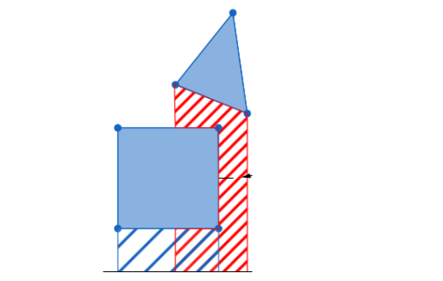

Roughly speaking, there are three stages that our engine loops through to simulate two-dimensional physics. The procedure is as follows:
- Contact Detection
- Contact Resolution
- State Integration
Then, each frame of our physics engine renders the updated results. We will dive further into each stage, but first, we need to review vectors as they're crucial to understanding and implementing a physics engine.
Vectors
A vector is an object that has both a magnitude and a direction. Intuitively, we can represent this object with an arrow, with the length representing the magnitude and the direction the arrow is pointing indicating the direction.

We can denote a two-dimensional vector like \(\overrightarrow{a} = (a_{x}, a_{y})\). If this vector is represented in the Cartesian coordinate system, this notation means that the tail of the vector is at the origin \((0, 0)\), and the head is at the point \((a_{x}, a_{y})\). For example, if we have \(\overrightarrow{a} = (4, 2)\), it corresponds to this vector:
Image Credit: Khan AcademyWe can also perform algebraic operations on vectors. Firstly, the length of a vector, denoted by \(||\) \(||\), can be calculated using the Pythagorean theorem. More formally,
\(||\) \(\overrightarrow{a}\) \(||\) = \(\sqrt{a_{x}^{2} + a_{y}^{2}}\)
When a vector is negated, its magnitude remains the same, but its direction reverses. If \(\overrightarrow{a} = (a_{x}, a_{y})\), the negation of \(\overrightarrow{a}\) is:
\(-\overrightarrow{a} = (-a_{x}, -a_{y})\)
You will see why this is useful soon. We can also add two vectors together.
\(\overrightarrow{a} + \overrightarrow{b} = (a_{x} + b_{x}, a_{y} + b_{y})\)
The application of negating a vector becomes immediately obvious. Subtracting two vectors \(\overrightarrow{a}\) and \(\overrightarrow{b}\) is identical to adding \(\overrightarrow{a}\) and \(-\overrightarrow{b}\) . More formally,
\(\overrightarrow{a} - \overrightarrow{b} = \overrightarrow{a} + (-\overrightarrow{b}) = (a_{x} - b_{x}, a_{y} - b_{y})\)
We now move into multiplication. Firstly, vectors can be multiplied by a
scalar quantity, which we will define as any real number. The effect is that
the vector's magnitude is scaled by a factor of the scalar quantity. Moreover, if the scalar
quantity is negative, the direction of the vector reverses.
Let \(s\) be the
scalar quantity:
\(s\overrightarrow{a} = (sa_{x}, sa_{y})\)
There are two ways we can multiply two vectors together. The first way is calculating the dot product of two vectors. It's denoted as \(\overrightarrow{a} \cdot \overrightarrow{b}\) and it is a scalar quantity that essentially describes the "same-ness" of two vectors. There are multiple ways to compute the dot product (which is a commutative operation), but it's easier to calculate it using the components of the two vectors, especially since we are working in two dimensions.
\(\overrightarrow{a} \cdot \overrightarrow{b} = a_{x}b_{x} + a_{y}b_{y}\)
It's also commonly defined as:
\(\overrightarrow{a} \cdot \overrightarrow{b} = ||a|| \times ||b||cos(\theta )\)
Where \(\theta\) is the angle between the two vectors. Although this definition is uglier to implement in code, it can be used to find the angle between two vectors.
\(||a||\times ||b||cos(\theta ) = a_{x}b_{x} +
a_{y}b_{y}\)
\(cos(\theta ) = \frac{a_{x}b_{x} + a_{y}b_{y}}{||a||\times ||b||}\)
\(\theta = cos^{-1}(\frac{a_{x}b_{x} + a_{y}b_{y}}{||a||\times ||b||})\)
Contact Detection
There's a lot to unpack here. First, I'll cover the fundamental algorithms required for this stage of the physics engine and then optimizations that enable better performance.
Representing Objects
To determine if two shapes intersect in our physics engine, we must understand how to represent them.
Shapes can either be convex or concave. In a convex shape, a line segment
connecting any two points within the shape is always fully contained inside the shape.
Conversely, inside a concave shape, this statement is untrue. Convex shapes are much easier
to work with, and there are many distance/intersection algorithms that we can implement for
them. Consequently, it's desired that we represent all concave objects with a convex shape.
Thus,
we arrive at the famous convex hull problem.
Convex Hull Problem
The convex hull problem is defined as finding the smallest convex polygon that
encloses all the points in a set.

The convex hull of the points given in \(a\) is shown in diagram \(b\). This algorithm can then be used on any concave shape in our physics engine - each vertex is a distinct point, and the convex hull is the convex representation of the object. Since optimization is not a priority yet, we'll first detail an \(O(N^{2})\) algorithm to compute the convex hull, where \(N\) is the number of vertices in the shape.

Let \(S\) be the set of vertices of the shape. The Jarvis march algorithm, animated above, starts at the leftmost point in \(S\), since the convex hull must include this point. Then, we iterate as follows:
X = leftmost point in S
while bestPoint != leftmost point in S:
Add X to the hull
bestPoint := S[0]
for p := each point in S:
if p is on the left of the line formed from X to bestPoint:
bestPoint = p
X = bestPoint If we are at a point on our convex hull \(P_{i}\), we select the next point
\(P_{i+1}\) such that all the points excluding \(P_{i}\) and \(P_{i+1}\) in \(S\) are to the
right of the line formed between \(P_{i}\) and \(P_{i+1}\). Let the leftmost point in \(S\)
be \(L\). Since \(L\) must be included in the convex hull, \(P_{0} = L\), and the
convex hull is built clockwise, terminating when \(P_{i+1} = P_{0}\).
The worst case
is when
the convex hull contains \(N\) vertices, and since we loop through all the points in \(S\)
(note \(|S| = N\)) for every vertex of the hull, our time complexity is \(O(N^{2})\).
The most obvious flaw is that when we approximate a concave shape with a convex shape, the original body loses its concave properties. Usually, this is not a problem, but there are situations where the concave properties are important to the behaviour of an object (such as a cup). For these scenarios, we can use convex decomposition, a method where we represent a concave object as a set of convex shapes.
Testing for Intersections
Now that we can represent objects, we must test whether two convex polygons intersect. To
achieve this, we can use the Separating Axis Theorem (SAT), which states that two
objects do
not overlap if there exists a line (called axis) onto which both the object's projections do
not intersect.
It can be shown that this line must be parallel to one of the sides
of the
polygon, and so, we can use the following algorithm:
-
Calculate the perpendicular vectors for the edges of each polygon.
- Project each vertex of the two polygons onto each perpendicular vector.
-  For each polygon on a perpendicular vector, we take the highest and lowest point of the vertex projections to calculate each polygon's projection.
-
Finally, we check the projections overlap. If there exists a perpendicular vector in
which the two projections do not overlap, the two objects are not
intersecting.
To implement this into code, we need a more rigorous procedure. Here is a well-defined mathematical approach that should assist with programming the detection.
- For the first step, we need to review some vector math. Firstly, the vertices of our
object will be represented with coordinates, so we need to find out how to calculate a
vector based on two coordinates. Let \(c_{1}\) be the first vertex, \(c_{2}\) be the
second vertex.
\(\overrightarrow{v_{c_{1}c_{2}}} = c_{2} - c_{1} = (c_{2_{x}} - c_{1_{x}}, c_{2_{y}} - c_{1_{y}})\)
Next, to calculate a perpendicular vector, we swap the \(x\) and \(y\) components, and then negate the \(x\) component. More formally, given \(\overrightarrow{v} = (v_{x}, v_{y})\),\(\overrightarrow{v_{\perp}} = (-v_{y}, v_{x})\)
-
To calculate the projection of each vertex on the perpendicular vector, we use the dot
product. Essentially, if \(v_{\perp}\) is our perpendicular vector, we calculate
\(\overrightarrow{v} \cdot x_{i}\), where \(x_{i}\) is each vertex inside our polygon.
Then, we take the minimum and maximum of the projected points, representing our
polygon's projection.
- Finally, we can check if these projections are overlapping. If they are not overlapping, the two polygons are not intersecting. Otherwise, we check the other perpendicular vectors.
The Separating Axis Theorem is quite excessive if we are working with basic shapes. As a remedy, we can use custom functions to detect collisions when working with specific shapes, such as circles or rectangles.
If we detect a collision, we will extract two pieces of information — a collision normal vector and a collison depth scalar value.
The collision normal vector is a normalized (unit) vector that tells us the direction in which the two shapes have collided and the collision depth is a scalar value that tells us how far the two bodies have already overlapped. With that, we can forward this information to the next stage of our engine.
Contact Resolution
When resolving a collision, we want to consider a variety of factors such as the direction and depth of the collision and any properties of the two objects, such as their mass, orientation, and velocity. In addition, to simulate realistic physics, two intersecting objects should be separated by the next frame.
We can take a variety of approaches, but one way is to mimic the real world and apply impulses to both colliding bodies to change their velocities. Remember, impulse is defined as a change in momentum, and is equal to \(m \Delta \vec{v}\), so if we calculate the impulse, we can isolate for \(\Delta \vec{v}\text{ }\) to calculate an object's change in velocity after a collision.
This method is also grounded in reality. When two objects contact in real life, they experience a force over some time (\(\vec{F} \Delta t\)), which is impulse. Let's call the two colliding objects \(A\) and \(B\).
The first step is to calculate the relative velocity between the colliding objects.
\(\vec{v}_{r} = \vec{v}_B - \vec{v}_A\)
This equation determines the relative velocity of \(B\) with respect to \(A\). The relative velocity is important because regardless of the velocity of both objects, if two scenarios have the same relative velocity, the response to the collision should be indentical. That is, whether the objects are moving at \(2m/s\) and \(4m/s\) or \(8m/s\) and \(10m/s\), the change in velocity of the slower objects in both scenarios should be the same, and the change in velocity of the faster objects in both scenarios should also be the same. Here's a nice interactive that demonstrates this idea.
Since we only care about the relative velocity that is in the direction of the collision, we'll calculate the dot product with our collision normal vector.
\(\vec{v}_{r} = (\vec{v}_B - \vec{v}_A) \cdot \vec{n}\)
Next, let's think about the types of collisions that can occur. It should be pretty clear that what the two objects are made of will impact the response to the collision. For example, imagine dropping a marble and a rubber ball with equal masses onto the floor — you'd expect the rubber ball to bounce much higher. The ratio of the final relative velocity to the initial relative velocity between two objects after their collision is known as the coefficient of restitution, and it represents the conversion of kinetic energy to heat energy. Let \(\overrightarrow{RV_{i}}\) be the initial relative velocity and \(\overrightarrow{RV_{f}}\) be the final relative velocity. The coefficient of restitution, denoted with the symbol \(e\) is then:
\(e=\frac{|\overrightarrow{RV_{f}}|}{|\overrightarrow{RV_{i}}|}\)
So, \(e = 1\) represents a perfectly elastic collision where no kinetic energy is lost, and \(e = 0\) represents a perfectly inelastic collision, where the objects fuse together and maximum kinetic energy is lost. Consequently, it would make sense if \(0 \leq e \leq 1\), but technically \(e > 1\) can occur if the objects gain kinetic energy (possible in some cases). However, we won't deal with those rare cases. When \(e \in (0, 1)\), the collision is inelastic, and some kinetic energy is converted to heat. In essence, we want our collision response between two steel balls to be different than the collision response between two rubber balls.
Our end goal is to calculate the impulse scalar (\(J\)), which we can dot product with our collision normal to get the impulse. So, building off our relative velocity, we'll multiply it with \((1 + e)\) to account for the coefficient of restitution.
\(J = (1 + e)(\vec{v}_B - \vec{v}_A) \cdot \vec{n}\)
From the real world and Newton's third law, the collision should point the objects in the opposite direction, so we will add a negative sign to our equation.
\(J = -(1 + e)(\vec{v}_B - \vec{v}_A) \cdot \vec{n}\)
This current equation is fine, but we haven't considered the masses of the two objects. From the Conservation of Momentum, the total momentum before and after the collision should be identical. The easiest way to conserve momentum is to divide our current value of \(J\) by the sum of the inverse masses of the objects.
\(J = \frac{-(1 + e)(\vec{v}_B - \vec{v}_A) \cdot \vec{n}}{m_{A}^{-1} + m_{B}^{-1}}\)
To explain why this works, let's quickly discuss how we'll use the impulse to calculate each object's change in velocity.
\(\vec{J} = m \Delta v \rightarrow \Delta v = \frac{\vec{J}}{m}\)
So, the change in velocity is equal to the impulse vector divided by an object's mass. Thus, when we divide our velocity by the sum of the inverse masses, it scales the impulse so that each object gets the correct proportion of the total energy/momentum of the entire collision. Finally, to get the impulse, we'll multiply this \(J\) value by our collision normal vector.
\(\vec{J} = (\frac{-(1 + e)(\vec{v}_B - \vec{v}_A) \cdot \vec{n}}{m_{A}^{-1} + m_{B}^{-1}})\vec{n}\)
Then, we just use our earlier equation to apply this impulse and calculate the change in velocity of both objects. Now, let's move on to adding angular components.
The rotational equivalent of linear force is torque (\(\vec{\tau} \)). When calculating linear velocity, all the points within an object move at the same rate. Based on Newton's second law (\(F = ma\), the acceleration is dependent on the force acting upon an object and its mass. Logically, we might conclude that the amount of angular acceleration an object experiences is also dependent on torque and the object's mass. However, when we apply torque, we're changing angular velocity, moving the body such that the mass farther from its centre of mass moves more than mass closer to its centre of mass.
So, the amount of angular acceleration an object experiences for a certain torque is based on "the moment of inertia," which describes the distribution of an object's mass around each axis and tells us how resistant this object is to rotation. Usually, we'd represent an object's moment of inertia using a special type of matrix known as a tensor. Each dimension in the tensor tells us about rotation along a certain axis, so if a body undergoes rotations about all three axes, we'd need a 3x3 matrix.
Luckily, when we're working in two dimensions, all rotations occur on the z-axis. This means that our tensor is a 1x1 matrix or simply a scalar value! Now, we can use some established equations to calculate the moment of inertia for different shapes.
For rectangles with mass \(m\), length \(l\), and width \(w\), the moment of inertia (\(I_{r}\)) is:
\(I_{r}=\frac{1}{12}(l^2+w^2)m\)
For circles with mass \(m\) and radius \(r\), the moment of inertia (\(I_{c}\)) is:
\(I_{c}=\frac{1}{2}mr^2\)
Now, we'll apply an angular impulse to change angular velocity, much like how we calculated a linear impulse to change linear velocity.
Let \(\vec{r}\text{ }\) be the relative position of the collision point from the object's centre of mass. We apply the impulse to our current angular velocity \(av\):
\(av = av \pm I^{-1}(\vec{r} \times \vec{J})\)
The plus-minus depends on which object we're applying the angular impulse to (since the impulses should point in opposite directions). Then, the combined impulse calculation is:
\(\vec{J}=(\frac{-(1+e)(\vec{v}_{BA}\cdot\vec{n})}{m^{-1}_{A}+m^{-1}_{B}+(I_{A}^{-1}(r_A \times \vec{n})\times r_A+I^{-1}_{B}(r_B \times \vec{n})\times r_B)\cdot \vec{n}})\vec{n}\)
It looks pretty gross, but it's combining a lot of different equations into one singular value.
State Integration
Integration is the stage where we calculate an object's velocity and displacement to update its position. The easiest way is to simply implement some known physics equations.
Let \(n\) be the current frame of our engine. First, we'll calculate the acceleration by dividing force by mass.
\(\vec{a}_{n} = \frac{\vec{F}}{m}\)
Then, use this acceleration to compute the new velocity:
\(\vec{v}_{n+1} = \vec{v}_{n} + \vec{a}_{n} \Delta t\)
And finally, compute the new position:
\(\vec{p}_{n+1} = \vec{p}_{n} + \vec{v}_{n+1}\Delta t\)
You might ask, what is the value of \(\Delta t\)? If we cap our physics engine at 60 frames per second, the \(\Delta t\) has a constant value of \(\frac{1}{60}\text{s}\). Obviously, this method is flawed if the simulation ever drops below 60 frames, but we won't worry about that for now.